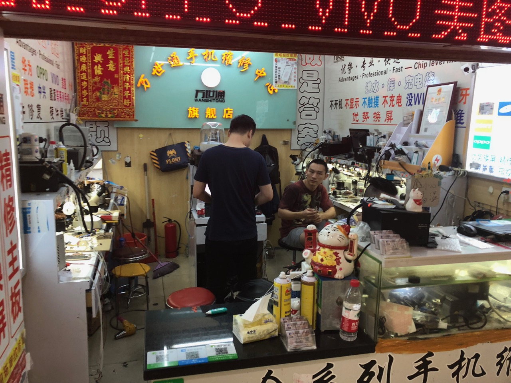
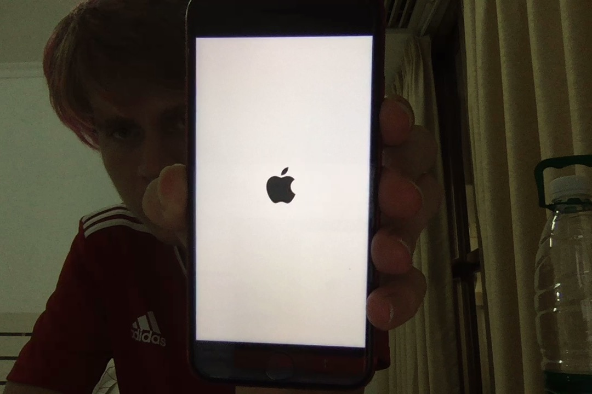
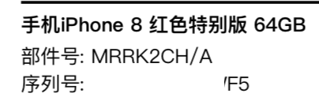
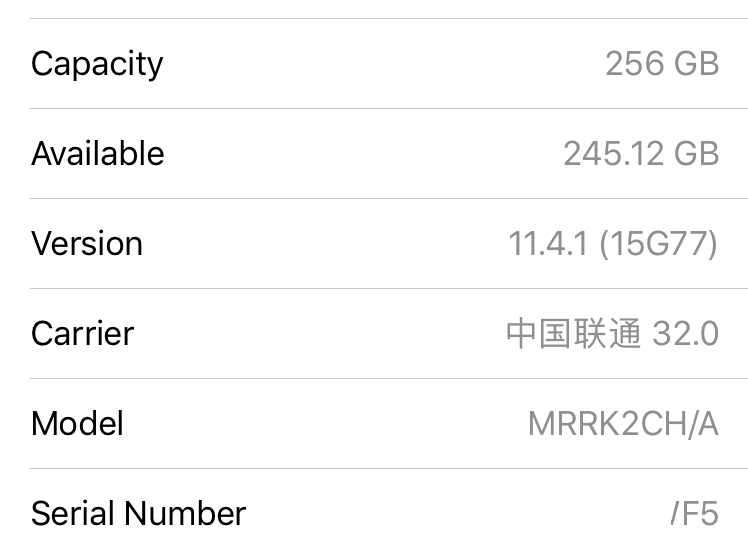

Usually I think of the amount of memory in an iPhone as a static thing. Keeping this is mind I usually get the size of phone that corresponds to the amount of photos I have. However, this summer I had to replace my phone while in China, which has one of the higher prices for iPhones, so I got a smaller capacity phone.
This turned out to be the perfect opportunity to try out a procedure I've heard of. You can desolder the NAND of broken/iCloud locked iPhones/iPad, perform some programming, and put them into other devices. In Shenzhen, most repair places that do chip level repairs will offer this. Keeping this in mind I headed to Shenzhen to try it out.

The markets in Shenzhen are a childhood dream. You can find any piece of electronics you could ever want. From small components to finished products, it's all in the labyrinth somewhere.
I went to a few different booths in the markets and the going price to upgrade an iPhone 8 to 256gb is about 280RMB or 41USD. Not a bad deal compared to what Apple charges. They will also replace the waterproof seal, though the nand chip loses whatever benefits it's underfill had. This is the booth I had mine done at. I waited a while, the nand chip has very small contacts so they had to try a few times to get it on right. While I waited they gave me bottled water and grapes which was a nice touch.
Apparantly the color of the phone used when deterimning what color to make the background when booting up the phone is stored on the flash chip. So if you have this procedure done, your new flash chip may not have the right color reflected. You could probably specify this when having the procedure done, but having a black phone with a white startup screen is fairly cool.
 The result.